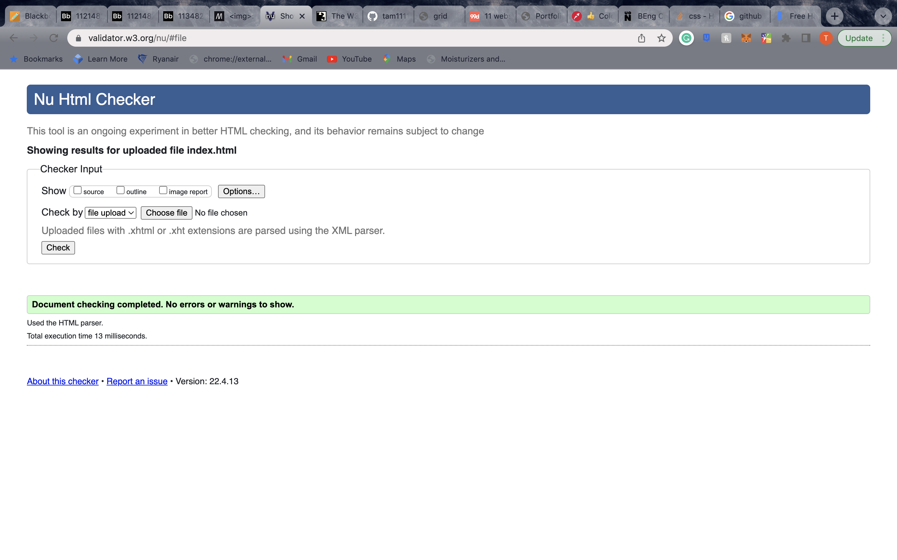
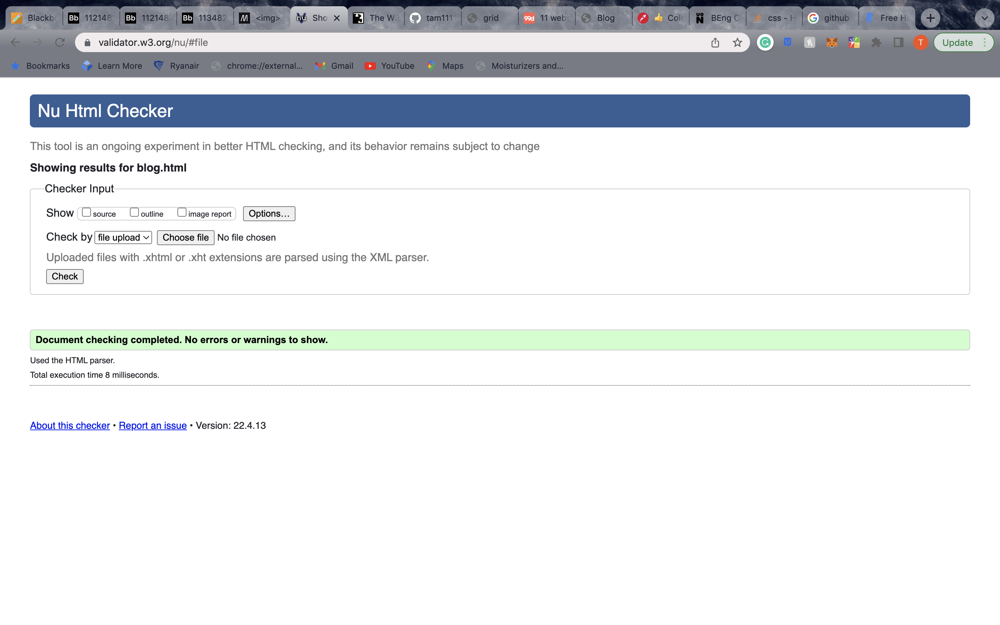

Site Report
Learning the basics
I first started learning how to code when I was in year 10, I learnt html, php, CSS and java so coming into uni I already knew quite a bit and it was easy to transition. The lessons we had from the start of the term were helpful as some reminded me certain things that I had forgotten, and some taught me new things. Overall, I’ll say my module experience has been very positive the class is interactive, and I always feel satisfied that I have learned something when I leave, it has been very easy for me as I already have experience.
Design
How I came up with my design started when I came across this website(click image to go to website) and I liked one of the colours used on the N26 bank website which was #2b6777 once I choose the colour I worked around it, for my background I typed #2b6777 background picture and that’s how I found it, I did try 2 other images first but I wasn’t sure so I asked my girlfriend and my cousin for their opinions which we then settled on the image I have now. For my font I had a choice between my two favourite fonts Verdana and Arial rounded MT I choose Arial as it looked easier on the eyes on the website.
On to more technical sides of things I used four stylesheets as I was getting confused when I tried to put everything into one, it helped me make things clearer and as my home page and site report page have the same layout and my blog and portfolio page had same grid layout it was helpful splitting them up.
All my pages have keyframe animations put on them and I used that as keyframe animation allowed me more control on what my animations do, my reason for using it is because it is easier to code in my opinion. I mainly used a fade in animation as I think simple animations make everything nicer, I’m not a fan of over-the-top special effects.
In my mobile navigation I put squares as the bullet points, and I used the nthchild(odd) so my navigation will alternate in white and grey my decision for doing this was just because I wanted to implement it since I learned it.
Validation
 I validated all of my html pages and CSS pages and they all came back with no errors the only one I got an error in is my contact page due to how we using mailto. I did check my work as I was going and corrected some errors my main error that I did have was not closing an a tag which I went and closed all of them and after that I got no more errors.
Refrences
Stack Overflow. (n.d.). html - How to change the color of each link for the nav bar? [online] Available at: https://stackoverflow.com/questions/65118709/how-to-change-the-color-of-each-link-for-the-nav-bar [Accessed 16 Apr. 2022].
Stack Overflow. (n.d.). css - Stopping a CSS3 Animation on last frame. [online] Available at: https://stackoverflow.com/questions/4359627/stopping-a-css3-animation-on-last-frame [Accessed 16 Apr. 2022].